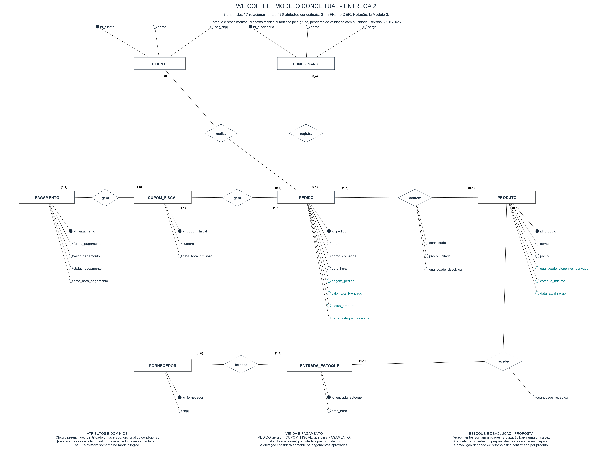

CLIENTE
CLIENTE = @ID_CLIENTE + NM_CLIENTE + (ID_CPF_CNPJ)
Leitura: Cada cliente possui identificador único e nome obrigatório. CPF/CNPJ é opcional e, quando informado, deve ser único.

MOONLIGHT COFFEE CAFETERIA LTDA. — WE COFFEE
Fonte física: script SQL completo. Este único HTML reúne as nove tabelas e todas as 44 colunas. PK implica NOT NULL; UNIQUE composto não torna cada componente individualmente único. NULL implícito não é um valor de negócio presumido. Não há coluna física valor_total: o total é calculado por SUM(quantidade × preco_unitario), conforme RN13. Estoque aparece somente a partir do modelo lógico; os arquivos conceituais permanecem preservados.
Software utilizado na criação do DER: brModelo 3, com arquivo editável no formato .brM3.
Baixar modelo editável · Abrir diagrama em tamanho original

Sem chaves estrangeiras no DER conceitual. As referências de FK nas tabelas deste dicionário pertencem ao modelo lógico. No DER, quantidade e preco_unitario são atributos externos ligados ao relacionamento CONTÉM.
O modelo representa PEDIDO, PRODUTO, CUPOM_FISCAL e PAGAMENTO, preservando os cadastros de CLIENTE e FUNCIONARIO. Todo pedido gera uma nota fiscal, representada neste trabalho por CUPOM_FISCAL. Esse documento gera os registros de pagamento.
Há um único relacionamento PEDIDO — CONTÉM — PRODUTO, com cardinalidade N:M e atributos quantidade e preço unitário da venda. Essa representação é válida no modelo conceitual; seu mapeamento para uma tabela associativa pertence à etapa lógica relacional.
A origem fica em PEDIDO.origem_pedido: TOTEM, BALCÃO ou DELIVERY. O equipamento utilizado é identificado pelo atributo PEDIDO.totem quando a origem é TOTEM, sem entidade própria.
Classificações conceituais: os atributos são simples e monovalorados neste recorte. Identificadores distinguem as ocorrências; origens e status possuem domínios enumerados. valor_total é um atributo derivado da soma de quantidade × preço unitário da venda. Obrigatoriedade, opcionalidade e uso condicional são restrições complementares.
| Entidade A | Relacionamento | Entidade B | Cardinalidade |
|---|---|---|---|
| CLIENTE | realiza | PEDIDO | 1:N — cliente associado opcional |
| FUNCIONARIO | registra | PEDIDO | 1:N — associação opcional em PEDIDO |
| PEDIDO | contém | PRODUTO | N:M — quantidade e preço unitário no relacionamento |
| PEDIDO | gera | CUPOM_FISCAL | 1:1 — todo pedido gera um documento |
| CUPOM_FISCAL | gera | PAGAMENTO | 1:N — admite divisão da conta |
O cliente escolhe a origem → PEDIDO registra origem_pedido, o totem quando aplicável e o nome da comanda → CONTÉM associa os produtos com quantidade e preço unitário → valor_total é derivado desses valores → PEDIDO gera CUPOM_FISCAL → CUPOM_FISCAL gera PAGAMENTO, inclusive em partes quando a conta é dividida → após a quitação, o pedido segue para preparo, identificação na comanda e entrega.
Todo pedido gera exatamente um CUPOM_FISCAL, e cada cupom pertence a exatamente um pedido. Cada PAGAMENTO referencia seu id_cupom_fiscal; o pedido é obtido por esse cupom.
O valor pago é a soma de valor_pagamento apenas dos registros aprovados vinculados ao cupom do pedido. Recusados e estornados não entram nessa soma. Sem aprovados, o resultado é zero; entre zero e valor_total, o pedido está parcialmente pago; a igualdade caracteriza a quitação. Valor superior ao total é divergência a conciliar. Esses resultados são derivados em consulta.
Uma tentativa recusada não cancela o pedido nem invalida pagamentos aprovados anteriores. A nova tentativa gera outro registro no mesmo id_cupom_fiscal, preservando o registro recusado.
Segundo a entrevista com o auxiliar geral Leandro Viana em 08/11/2026, relatada pelo grupo em 09/11/2026, a unidade cancela a nota fiscal e o pedido e realiza o estorno na hora pelo cartão do cliente. O sistema existente faz o balanceamento e a devolução automaticamente.
No modelo acadêmico, CANCELADO impede a continuidade do preparo/entrega e Estornado registra devolução confirmada. O estorno integral por registro é uma escolha técnica desta versão. Sem confirmação, o pagamento permanece Aprovado e é apontado como exceção de devolução pendente; esse não é o fluxo normal imediato relatado. Recusados não exigem estorno. Pedido, cupom e pagamentos permanecem no histórico.
A situação de cancelamento fiscal e o evento/data de estorno ainda não são armazenados. A execução fiscal e financeira depende dos sistemas externos. Estágios permitidos, responsáveis pelo estorno, outras formas de devolução e eventos após o fechamento permanecem a detalhar, conforme a Seção 2.7 do README.
A mesma entrevista confirma o fechamento ao final de cada dia, exclusivamente pelos gerentes. A consolidação mensal apoia a análise desses resultados. Consultar relatórios não equivale a efetivar um fechamento.
As consultas acadêmicas selecionam vendas por PEDIDO.data_hora e tentativas por PAGAMENTO.data_hora_pagamento, com início inclusivo e fim exclusivo. O campo utilizado pelo sistema existente e o horário exato de corte não foram informados. O banco não registra o gerente, o instante e os valores de um fechamento histórico; autenticação e restrição por perfil ainda precisam de implementação.
| Símbolo | Significado |
|---|---|
= |
é composto de |
+ |
e (conecta elementos obrigatórios) |
( ) |
opcional |
{ }, n{ }m |
iteração, com limite mínimo n e máximo m |
[ | ] |
escolha obrigatória entre alternativas |
/ / |
rótulo de um grupo repetitivo |
@ |
identificador (chave primária) |
* * |
comentário, fora da estrutura formal |
NM_ nome, DT_ data, ID_ identificador (não
sofre operação matemática), CD_ código de domínio, QT_ quantidade,
TP_ tipo (categorização), IN_ indicador booleano, VL_ valor
monetário, DS_ descrição/texto livre.
snake_case minúsculo, sem prefixo. Cada atributo abaixo apresenta
o nome prefixado do dicionário e a coluna correspondente proposta. Tipos físicos, PKs, FKs e
índices orientam as etapas lógica e física; no DER conceitual, as associações são representadas
pelos relacionamentos e suas cardinalidades. Em uma representação estrita em Chen, essas
ligações não precisam ser repetidas como FKs nos atributos das entidades; os identificadores
próprios das entidades são preservados.
| Atributo | Coluna no BD | Tipo físico | Obrigatoriedade | Chaves / unicidade | Valores permitidos | Valor padrão / geração | Significado / RN |
|---|---|---|---|---|---|---|---|
| ID_CLIENTE |
id_cliente
|
INT | Sim — NOT NULL | PK; único | Inteiro; referências devem existir quando informadas. | Sem DEFAULT explícito; AUTO_INCREMENT | Identificador do cliente cadastrado (RN01). |
| NOME |
nome
|
VARCHAR(150) | Sim — NOT NULL | Sem unicidade ou chave própria | Texto não vazio. | Sem DEFAULT explícito | Nome do cadastro, sem permitir texto vazio (RN02). |
| CPF_CNPJ |
cpf_cnpj
|
VARCHAR(14) | Não — admite NULL | UNIQUE | NULL ou texto com 11/14 dígitos de 0 a 9. | NULL (implícito) | Documento opcional padronizado sem pontuação; não valida dígitos verificadores (RN02). |
CHECK (CHAR_LENGTH(TRIM(nome)) > 0)
CHECK (cpf_cnpj IS NULL OR (CHAR_LENGTH(cpf_cnpj) IN (11,14) AND cpf_cnpj REGEXP '^[0-9]+$'))
| Atributo | Coluna no BD | Tipo físico | Obrigatoriedade | Chaves / unicidade | Valores permitidos | Valor padrão / geração | Significado / RN |
|---|---|---|---|---|---|---|---|
| ID_FUNCIONARIO |
id_funcionario
|
INT | Sim — NOT NULL | PK; único | Inteiro; referências devem existir quando informadas. | Sem DEFAULT explícito; AUTO_INCREMENT | Identificador do funcionário (RN01). |
| NOME |
nome
|
VARCHAR(150) | Sim — NOT NULL | Sem unicidade ou chave própria | Texto não vazio. | Sem DEFAULT explícito | Nome do funcionário cadastrado (RN03). |
| CARGO |
cargo
|
VARCHAR(80) | Sim — NOT NULL | Sem unicidade ou chave própria | Texto não vazio. | Sem DEFAULT explícito | Função no cadastro (RN03). |
CHECK (CHAR_LENGTH(TRIM(nome)) > 0)
CHECK (CHAR_LENGTH(TRIM(cargo)) > 0)
| Atributo | Coluna no BD | Tipo físico | Obrigatoriedade | Chaves / unicidade | Valores permitidos | Valor padrão / geração | Significado / RN |
|---|---|---|---|---|---|---|---|
| ID_PRODUTO |
id_produto
|
INT | Sim — NOT NULL | PK; único | Inteiro; referências devem existir quando informadas. | Sem DEFAULT explícito; AUTO_INCREMENT | Identificador do produto pronto para venda (RN01). |
| NOME |
nome
|
VARCHAR(150) | Sim — NOT NULL | Sem unicidade ou chave própria | Texto não vazio. | Sem DEFAULT explícito | Nome do produto (RN04). |
| PRECO |
preco
|
DECIMAL(12,2) | Sim — NOT NULL | Sem unicidade ou chave própria | Maior que zero. | Sem DEFAULT explícito | Preço atual; alterações não atualizam vendas anteriores (RN04, RN12). |
CHECK (CHAR_LENGTH(TRIM(nome)) > 0)
CHECK (preco > 0)
| Atributo | Coluna no BD | Tipo físico | Obrigatoriedade | Chaves / unicidade | Valores permitidos | Valor padrão / geração | Significado / RN |
|---|---|---|---|---|---|---|---|
| ID_PEDIDO |
id_pedido
|
INT | Sim — NOT NULL | PK; único | Inteiro; referências devem existir quando informadas. | Sem DEFAULT explícito; AUTO_INCREMENT | Identificador da compra; também usado na chamada quando não há nome (RN01, RN10). |
| ID_CLIENTE |
id_cliente
|
INT | Não — admite NULL | FK (id_cliente) → CLIENTE(id_cliente); RESTRICT | Inteiro; referências devem existir quando informadas. | NULL (implícito) | Cliente existente quando informado; ausência não impede venda (RN06, RN09). |
| ID_FUNCIONARIO |
id_funcionario
|
INT | Não — admite NULL | FK (id_funcionario) → FUNCIONARIO(id_funcionario); RESTRICT | Inteiro; referências devem existir quando informadas. | NULL (implícito) | Funcionário associado opcional, inclusive no balcão (RN03, RN08). |
| TOTEM |
totem
|
VARCHAR(50) | Não — admite NULL | Sem unicidade ou chave própria | Não vazio em TOTEM; NULL nos demais canais. | NULL (implícito) | Equipamento utilizado somente no autoatendimento (RN07). |
| NOME_COMANDA |
nome_comanda
|
VARCHAR(150) | Não — admite NULL | Sem unicidade ou chave própria | NULL ou texto não vazio. | NULL (implícito) | Identificação histórica usada para chamada, independente do cliente (RN10). |
| DATA_HORA |
data_hora
|
DATETIME | Sim — NOT NULL | Sem unicidade ou chave própria | Domínio do tipo DATETIME. | CURRENT_TIMESTAMP | Instante do registro do pedido (RN06). |
| ORIGEM_PEDIDO |
origem_pedido
|
VARCHAR(10) | Sim — NOT NULL | Sem unicidade ou chave própria | TOTEM, BALCÃO ou DELIVERY. | Sem DEFAULT explícito | Canal de atendimento (RN07). |
| STATUS_PREPARO |
status_preparo
|
VARCHAR(12) | Sim — NOT NULL | Sem unicidade ou chave própria | RECEBIDO, EM_PREPARO, PRONTO, ENTREGUE ou CANCELADO (RN23; procedimento confirmado). | 'RECEBIDO' | Estado de preparo; novo pedido deve iniciar RECEBIDO. Transições controladas por trigger e rotina (RN22–RN23, RN27). |
CHECK (origem_pedido IN ('TOTEM','BALCÃO','DELIVERY'))
CHECK ((origem_pedido = 'TOTEM' AND totem IS NOT NULL AND CHAR_LENGTH(TRIM(totem)) > 0)
OR (origem_pedido IN ('BALCÃO','DELIVERY') AND totem IS NULL))
CHECK (nome_comanda IS NULL OR CHAR_LENGTH(TRIM(nome_comanda)) > 0)
CHECK (status_preparo IN ('RECEBIDO','EM_PREPARO','PRONTO','ENTREGUE','CANCELADO'))
| Atributo | Coluna no BD | Tipo físico | Obrigatoriedade | Chaves / unicidade | Valores permitidos | Valor padrão / geração | Significado / RN |
|---|---|---|---|---|---|---|---|
| ID_PEDIDO |
id_pedido
|
INT | Sim — NOT NULL | PK composta (id_pedido, id_produto); FK (id_pedido) → PEDIDO(id_pedido); RESTRICT | Inteiro; referências devem existir quando informadas. | Sem DEFAULT explícito | Pedido ao qual o item pertence (RN11). |
| ID_PRODUTO |
id_produto
|
INT | Sim — NOT NULL | PK composta (id_pedido, id_produto); FK (id_produto) → PRODUTO(id_produto); RESTRICT | Inteiro; referências devem existir quando informadas. | Sem DEFAULT explícito | Produto participante da compra (RN11). |
| QUANTIDADE |
quantidade
|
INT | Sim — NOT NULL | Sem unicidade ou chave própria | Inteiro maior que zero. | Sem DEFAULT explícito | Unidades do produto naquele pedido (RN11). |
| PRECO_UNITARIO |
preco_unitario
|
DECIMAL(12,2) | Sim — NOT NULL | Sem unicidade ou chave própria | Domínio DECIMAL(12,2); sem CHECK numérico adicional. | Sem DEFAULT explícito | Preço praticado na venda; preservado após baixa (RN12). RN12 não define limite numérico adicional. |
CHECK (quantidade > 0)
| Atributo | Coluna no BD | Tipo físico | Obrigatoriedade | Chaves / unicidade | Valores permitidos | Valor padrão / geração | Significado / RN |
|---|---|---|---|---|---|---|---|
| ID_CUPOM_FISCAL |
id_cupom_fiscal
|
INT | Sim — NOT NULL | PK; único | Inteiro; referências devem existir quando informadas. | Sem DEFAULT explícito; AUTO_INCREMENT | Identificador do documento fiscal simulado (RN01). |
| ID_PEDIDO |
id_pedido
|
INT | Sim — NOT NULL | UNIQUE; FK (id_pedido) → PEDIDO(id_pedido); RESTRICT | Inteiro; referências devem existir quando informadas. | Sem DEFAULT explícito | Pedido que gerou o cupom; no máximo um cupom por pedido (RN14). |
| NUMERO |
numero
|
VARCHAR(50) | Sim — NOT NULL | UNIQUE | Texto não vazio. | Sem DEFAULT explícito | Número único no escopo desta unidade (RN15). |
| DATA_HORA_EMISSAO |
data_hora_emissao
|
DATETIME | Sim — NOT NULL | Sem unicidade ou chave própria | Domínio do tipo DATETIME. | CURRENT_TIMESTAMP | Data e hora de emissão (RN15). |
CHECK (CHAR_LENGTH(TRIM(numero)) > 0)
| Atributo | Coluna no BD | Tipo físico | Obrigatoriedade | Chaves / unicidade | Valores permitidos | Valor padrão / geração | Significado / RN |
|---|---|---|---|---|---|---|---|
| ID_PAGAMENTO |
id_pagamento
|
INT | Sim — NOT NULL | PK; único | Inteiro; referências devem existir quando informadas. | Sem DEFAULT explícito; AUTO_INCREMENT | Identificador de cada tentativa, inclusive recusada (RN01, RN21). |
| ID_CUPOM_FISCAL |
id_cupom_fiscal
|
INT | Sim — NOT NULL | FK (id_cupom_fiscal) → CUPOM_FISCAL(id_cupom_fiscal); RESTRICT | Inteiro; referências devem existir quando informadas. | Sem DEFAULT explícito | Documento ao qual pertence a tentativa ou parcela (RN16, RN18). |
| FORMA_PAGAMENTO |
forma_pagamento
|
VARCHAR(10) | Sim — NOT NULL | Sem unicidade ou chave própria | PIX, Crédito, Débito ou Dinheiro. | Sem DEFAULT explícito | Meio usado nesta tentativa (RN17). |
| VALOR_PAGAMENTO |
valor_pagamento
|
DECIMAL(12,2) | Sim — NOT NULL | Sem unicidade ou chave própria | Maior que zero. | Sem DEFAULT explícito | Valor da tentativa; soma como pago apenas quando Aprovado (RN17, RN19). |
| STATUS_PAGAMENTO |
status_pagamento
|
VARCHAR(10) | Sim — NOT NULL | Sem unicidade ou chave própria | Aprovado, Recusado ou Estornado (RN24; após devolução confirmada). | Sem DEFAULT explícito | Resultado financeiro atual; Estornado registra devolução confirmada (RN24). O estorno integral por registro é uma escolha técnica desta versão. |
| DATA_HORA_PAGAMENTO |
data_hora_pagamento
|
DATETIME | Sim — NOT NULL | Sem unicidade ou chave própria | Domínio do tipo DATETIME. | CURRENT_TIMESTAMP | Instante da tentativa; o evento/data da devolução não é armazenado, mesmo no estorno imediato relatado (RN17, RN24). |
CHECK (forma_pagamento IN ('PIX','Crédito','Débito','Dinheiro'))
CHECK (valor_pagamento > 0)
CHECK (status_pagamento IN ('Aprovado','Recusado','Estornado'))
| Atributo | Coluna no BD | Tipo físico | Obrigatoriedade | Chaves / unicidade | Valores permitidos | Valor padrão / geração | Significado / RN |
|---|---|---|---|---|---|---|---|
| ID_PRODUTO |
id_produto
|
INT | Sim — NOT NULL | PK; único; FK (id_produto) → PRODUTO(id_produto); RESTRICT | Inteiro; referências devem existir quando informadas. | Sem DEFAULT explícito | Produto com saldo único; registro criado pelo trigger de PRODUTO (RN25). |
| QUANTIDADE_DISPONIVEL |
quantidade_disponivel
|
INT | Sim — NOT NULL | Sem unicidade ou chave própria | Inteiro maior ou igual a zero. | 0 | Saldo materializado, mantido atomicamente pelos movimentos e conciliado por A12 (RN25, RN31–RN32). |
| ESTOQUE_MINIMO |
estoque_minimo
|
INT | Sim — NOT NULL | Sem unicidade ou chave própria | Inteiro maior ou igual a zero. | 0 | Limite configurável de reposição; cinco é somente exemplo da carga (RN30). |
| DATA_ATUALIZACAO |
data_atualizacao
|
DATETIME | Sim — NOT NULL | Sem unicidade ou chave própria | Domínio do tipo DATETIME. | CURRENT_TIMESTAMP | Data/hora do último movimento aplicado; não é histórico de sincronização dos canais (RN26). |
CHECK (quantidade_disponivel >= 0)
CHECK (estoque_minimo >= 0)
| Atributo | Coluna no BD | Tipo físico | Obrigatoriedade | Chaves / unicidade | Valores permitidos | Valor padrão / geração | Significado / RN |
|---|---|---|---|---|---|---|---|
| ID_MOVIMENTACAO |
id_movimentacao
|
INT | Sim — NOT NULL | PK; único | Inteiro; referências devem existir quando informadas. | Sem DEFAULT explícito; AUTO_INCREMENT | Identificador do lançamento imutável (RN26, RN29). |
| ID_PRODUTO |
id_produto
|
INT | Sim — NOT NULL | FK (id_produto) → ESTOQUE(id_produto); RESTRICT; FK composta (id_pedido,id_produto) → ITEM_PEDIDO(id_pedido,id_produto); RESTRICT; UNIQUE em conjunto (id_pedido,id_produto,tipo) | Inteiro; referências devem existir quando informadas. | Sem DEFAULT explícito | Estoque movimentado e produto do item quando houver pedido (RN25–RN28). |
| ID_PEDIDO |
id_pedido
|
INT | Não — admite NULL | FK composta (id_pedido,id_produto) → ITEM_PEDIDO(id_pedido,id_produto); RESTRICT; UNIQUE em conjunto (id_pedido,id_produto,tipo) | Preenchido em VENDA/RETORNO; NULL em ENTRADA/PERDA/AJUSTE_ENTRADA/AJUSTE_SAIDA. | NULL (implícito) | Pedido obrigatório em VENDA/RETORNO e ausente nas demais operações (RN27–RN28). |
| ID_FUNCIONARIO |
id_funcionario
|
INT | Sim — NOT NULL | FK (id_funcionario) → FUNCIONARIO(id_funcionario); RESTRICT | Inteiro; referências devem existir quando informadas. | Sem DEFAULT explícito | Responsável pelo lançamento; não torna obrigatório o funcionário na venda (RN26, RN29). |
| TIPO |
tipo
|
VARCHAR(15) | Sim — NOT NULL | UNIQUE em conjunto (id_pedido,id_produto,tipo) | ENTRADA, VENDA, PERDA, AJUSTE_ENTRADA, AJUSTE_SAIDA ou RETORNO. | Sem DEFAULT explícito | Determina entrada ou saída do saldo (RN26–RN28). |
| QUANTIDADE |
quantidade
|
INT | Sim — NOT NULL | Sem unicidade ou chave própria | Inteiro maior que zero. | Sem DEFAULT explícito | Magnitude positiva; venda e retorno correspondem ao item integral (RN26–RN28). |
| DATA_HORA |
data_hora
|
DATETIME | Sim — NOT NULL | Sem unicidade ou chave própria | Domínio do tipo DATETIME. | CURRENT_TIMESTAMP | Instante do movimento (RN26). |
| MOTIVO |
motivo
|
VARCHAR(255) | Sim — NOT NULL | Sem unicidade ou chave própria | Texto não vazio. | Sem DEFAULT explícito | Justificativa rastreável do lançamento (RN26, RN29). |
| REFERENCIA |
referencia
|
VARCHAR(80) | Sim — NOT NULL | UNIQUE | Texto não vazio. | Sem DEFAULT explícito | Identificador único de operação para evitar repetição (RN29). |
CHECK (quantidade > 0)
CHECK (tipo IN ('ENTRADA','VENDA','PERDA','AJUSTE_ENTRADA','AJUSTE_SAIDA','RETORNO'))
CHECK ((tipo IN ('VENDA','RETORNO') AND id_pedido IS NOT NULL)
OR (tipo IN ('ENTRADA','PERDA','AJUSTE_ENTRADA','AJUSTE_SAIDA') AND id_pedido IS NULL))
CHECK (CHAR_LENGTH(TRIM(motivo)) > 0)
CHECK (CHAR_LENGTH(TRIM(referencia)) > 0)
O sistema deverá registrar eventos relevantes para acompanhar consultas, alterações e tentativas de operações não autorizadas.
| Campo | Informação registrada |
|---|---|
| id_log | Identificador único do evento. |
| data_hora_evento | Data e horário da ocorrência. |
| identificacao_ator | Conta, serviço ou sessão responsável, quando identificável. |
| perfil_utilizado | Perfil de acesso utilizado na operação, quando disponível. |
| operacao | Consulta, inclusão, alteração, cancelamento, estorno, exclusão, autenticação ou exportação. |
| entidade_alvo | Entidade ou recurso acessado, quando aplicável. |
| referencia_registro | Identificador do registro afetado, quando houver um registro específico. |
| resultado | SUCESSO, NEGADO ou FALHA. |
| motivo | Justificativa ou código de erro, quando aplicável, evitando reproduzir dados pessoais desnecessários. |
O resultado do log indica o resultado da operação no sistema. Por exemplo, registrar corretamente uma tentativa de pagamento recusada pode gerar um log de SUCESSO, enquanto o pagamento permanece Recusado.
Os perfis operacionais não poderão editar ou apagar os registros de auditoria. Sua eliminação dependerá de procedimento de retenção aprovado.
PEDIDO.id_funcionario continuará opcional.| Perfil | Finalidade |
|---|---|
| Atendimento | Registrar e acompanhar pedidos, clientes e tentativas de pagamento necessárias ao atendimento. |
| Gerência | Realizar o fechamento diário (atribuição confirmada em RN33); administrar cadastros, consultar resultados e autorizar operações excepcionais conforme a proposta de permissões. |
| Consulta gerencial | Consultar relatórios agregados, sem alterar registros nem acessar dados pessoais desnecessários. |
A execução do fechamento diário exclusivamente por gerentes foi confirmada na entrevista de 08/11/2026 (RF31/RN33). As demais atribuições dos perfis, inclusive a autorização para cancelar ou estornar, continuam propostas a validar. A participação de uma pessoa na escala não concede automaticamente acesso ao sistema.
| Operação | Atendimento | Gerência | Consulta gerencial |
|---|---|---|---|
| Consultar produtos e preços | Permitido | Permitido | Permitido |
| Cadastrar ou alterar produtos e preços | Não permitido | Permitido | Não permitido |
| Cadastrar ou atualizar clientes durante o atendimento | Permitido | Permitido | Não permitido |
| Administrar o cadastro de funcionários | Não permitido | Permitido | Não permitido |
| Registrar pedidos e tentativas de pagamento | Permitido | Permitido | Não permitido |
| Atualizar a situação de preparo | Permitido, conforme as regras do pedido | Permitido | Não permitido |
| Solicitar cancelamento ou estorno | Permitido | Permitido | Não permitido |
| Autorizar e registrar cancelamento ou estorno (responsáveis a confirmar) | Proposto: não permitido | Proposto: permitido, a validar | Não permitido |
| Realizar fechamento diário de vendas (RF31/RN33; atribuição confirmada) | Não permitido | Permitido exclusivamente aos gerentes | Não permitido |
| Consultar relatórios | Somente operacionais necessários ao atendimento | Gerenciais | Agregados, sem identificação de clientes |
| Consultar logs | Não permitido | Permitido para acompanhamento autorizado | Não permitido |
| Excluir pedidos, cupons ou pagamentos como forma de cancelamento | Não permitido | Não permitido | Não permitido |
| Editar ou apagar manualmente logs | Não permitido | Não permitido | Não permitido |
Operações sem autorização expressa na matriz deverão ser negadas. Mesmo quando permitidas, continuam sujeitas às regras de negócio: a permissão para registrar um estorno, por exemplo, não dispensa a confirmação da devolução financeira.
Limpeza e segurança terceirizadas não receberão acesso aos dados de clientes e vendas nesta proposta. Eventuais acessos relacionados à escala deverão ser definidos separadamente.
As permissões técnicas dos canais TOTEM e DELIVERY também deverão ser especificadas, sem presumir que utilizam os mesmos acessos dos funcionários.
Para cada categoria, deverão ser definidos prazo, marco inicial da contagem, justificativa, responsável pela aprovação e destino após o período.
| Categoria | Finalidade da conservação | Referência para definir o período | Tratamento posterior |
|---|---|---|---|
| CLIENTE — nome e CPF/CNPJ | Identificação e demais finalidades confirmadas para o cadastro | Necessidade do cadastro e eventuais motivos de conservação aplicáveis | Avaliar eliminação ou anonimização dos dados que deixarem de ser necessários. |
| PEDIDO — nome da comanda | Identificação e chamada durante o atendimento | Conclusão do atendimento e resolução de pendências que justifiquem sua conservação | Avaliar remoção ou anonimização do nome, preservando os dados necessários da venda. |
| FUNCIONARIO — nome e cargo | Identificação cadastral e vínculos registrados | Encerramento do vínculo e necessidades de conservação confirmadas | Avaliar conservação restrita, arquivamento ou anonimização, preservando a integridade das referências. |
| PRODUTO | Cadastro e identificação dos produtos vendidos | Utilização no catálogo e existência de histórico associado | Preservar as referências necessárias às vendas anteriores. |
| PEDIDO e CONTÉM | Histórico da compra, quantidades e preços praticados | Data do pedido e finalidades de conservação aplicáveis | Preservar a consistência do histórico; definir procedimento autorizado de arquivamento ou eliminação. |
| CUPOM_FISCAL e PAGAMENTO | Registro fiscal, financeiro, conciliação e tratamento de contestações | Regras aplicáveis ao documento e à operação, a confirmar com o responsável | Destinação somente após validação das necessidades de conservação. |
| Logs | Auditoria e investigação de ocorrências | Data do evento e período necessário para acompanhamento | Eliminação controlada após o prazo aprovado, ressalvadas ocorrências que exijam conservação. |
A aprovação deste conteúdo não significa que os prazos já foram definidos.
As expressões utilizam os nomes dos atributos do próprio dicionário. Os valores possíveis são apresentados separadamente como domínios.
CLIENTE = @ID_CLIENTE + NM_CLIENTE + (ID_CPF_CNPJ)
Leitura: Cada cliente possui identificador único e nome obrigatório. CPF/CNPJ é opcional e, quando informado, deve ser único.
FUNCIONARIO = @ID_FUNCIONARIO + NM_FUNCIONARIO + DS_CARGO
Leitura: Cada funcionário possui identificador único, nome e cargo obrigatórios. Essa obrigatoriedade pertence ao cadastro e não torna obrigatório associar um funcionário a cada pedido.
PEDIDO = @ID_PEDIDO + (ID_CLIENTE) + (ID_FUNCIONARIO)
+ (DS_TOTEM) + (NM_COMANDA) + DT_HORA_PEDIDO
+ TP_ORIGEM_PEDIDO + VL_TOTAL + TP_STATUS_PREPAROLeitura: Cada pedido possui identificador único, data e horário, origem e situação de preparo. O cliente, o funcionário associado e o nome da comanda são opcionais. A identificação do totem é obrigatória somente na origem TOTEM. Na ausência de nome de comanda, utiliza-se o número do pedido. VL_TOTAL é derivado da soma de quantidade multiplicada pelo preço unitário de cada produto associado.
PRODUTO = @ID_PRODUTO + NM_PRODUTO + VL_PRECO
Leitura: Cada produto possui identificador único, nome e preço atual obrigatórios. O preço deve ser maior que zero. Alterações nesse preço não modificam o preço histórico registrado nas vendas.
CUPOM_FISCAL = @ID_CUPOM_FISCAL + ID_PEDIDO
+ ID_NUMERO_CUPOM + DT_HORA_EMISSAOLeitura: Cada cupom possui identificador único, referência obrigatória ao pedido, número e data/hora de emissão. Cada pedido gera exatamente um cupom, e o número do documento é único no escopo da unidade.
PAGAMENTO = @ID_PAGAMENTO + ID_CUPOM_FISCAL
+ TP_FORMA_PAGTO + VL_PAGAMENTO
+ TP_STATUS_PGTO + DT_HORA_PAGAMENTOLeitura: Cada tentativa possui identificador único, vínculo obrigatório com um cupom, forma, valor, situação e data/hora de processamento. Um cupom pode reunir várias tentativas, permitindo divisão da conta e novas tentativas após recusa. Somente valores aprovados compõem o valor pago.
Leitura: um pedido contém um ou mais produtos, e um produto pode participar de vários pedidos. Cada associação registra:
quantidade: inteira, obrigatória e maior que zero;preco_unitario: obrigatório, correspondente ao preço praticado naquela venda.Esses dados pertencem ao relacionamento CONTÉM. O total do pedido resulta da soma de quantidade × preco_unitario.
O nome e o CPF de uma pessoa natural são dados pessoais conforme o art. 5º, I, da LGPD. O inciso II trata de dados pessoais sensíveis. Definições da ANPD.
A opcionalidade de CPF/CNPJ no cadastro é uma regra do atendimento e não define, por si só, a base legal do tratamento.
As finalidades, os acessos e os critérios de conservação deverão ser registrados e validados. Os logs deverão evitar senhas, credenciais e cópias desnecessárias de documentos ou dados pessoais.
| Versão | Data | Registro |
|---|---|---|
| v1.5 | 09/11/2026 | Entrevista de 08/11/2026: fechamento diário exclusivo dos gerentes, cancelamento da nota/pedido e estorno imediato pelo cartão com balanceamento automático no sistema existente. Requisitos RF31/RN33 e limites de implementação documentados; nove tabelas e 44 colunas preservadas. |
| v1.1 | 28/10/2026 | Retirada de FORNECEDOR, atualização das contagens e vínculo opcional com funcionário. |
| v1.2 | 28/10/2026 | Documentação de logs, matriz de acesso, critérios de retenção, leitura das expressões e revisão da referência à LGPD. |
| v1.4 | 01/11/2026 | Consolidação das nove tabelas, 44 colunas e todas as restrições no mesmo HTML, alinhadas ao script MySQL. |
| v1.3 | 01/11/2026 | Complemento de estoque exclusivamente lógico/físico; DER conceitual preservado. |
A versão v1.5 propaga as confirmações da entrevista sem alterar a estrutura física. A atribuição do fechamento à Gerência está confirmada; as demais permissões, auditoria e retenção conservam as pendências indicadas nas respectivas seções. Autenticação, registro do fechamento e integrações externas ainda não estão implementados.
As FKs impedem referências órfãs, mas não garantem que todo pedido tenha item e cupom, ou que todo cupom tenha tentativa. A01–A03 verificam essas cardinalidades mínimas; a conclusão do cadastro exige serviço transacional próprio.
sp_liberar_preparo exige quitação exata e baixa integral, com reversão de todas as baixas se faltar saldo. Triggers preservam a composição após baixa e rejeitam UPDATE/DELETE de movimentos. sp_retornar_estoque exige cancelamento, baixa anterior e confirmação de aptidão para revenda; nesta versão o retorno é integral por item, no máximo uma vez. Cancelamento e estorno não repõem saldo automaticamente. A12–A16 auditam estoque e conciliação.
sp_registrar_movimentacao registra entradas, perdas e ajustes com responsável, motivo e referência única. As rotinas gerenciam a própria transação e devem ser chamadas fora de uma transação já aberta. As contas da aplicação devem usar EXECUTE nas rotinas, sem escrita direta nos saldos/movimentos; a criação desses perfis não está implementada no script. Não existe sincronização dos canais externos nem controle de validade/lotes nesta versão.
O levantamento de 08/11/2026 confirma o fechamento diário exclusivo dos gerentes e o cancelamento da nota/pedido com estorno imediato pelo cartão e balanceamento automático no sistema existente. O esquema continua com nove tabelas e 44 colunas: situação fiscal, evento/data de estorno, registro de fechamento e controle de acesso ainda não estão implementados. As consultas refletem a situação atual, sem reconstruir fechamentos históricos; A05 detecta devoluções pendentes como exceção fictícia de teste. Cancelamento e estorno continuam sem repor estoque automaticamente.
O PDF 02-03g_Exemplo_Dicionario_Dados.pdf não foi disponibilizado nesta revisão. A estrutura atual de expressões e fichas foi preservada e ampliada; a correspondência exata com o PDF precisa ser conferida quando o arquivo estiver acessível.